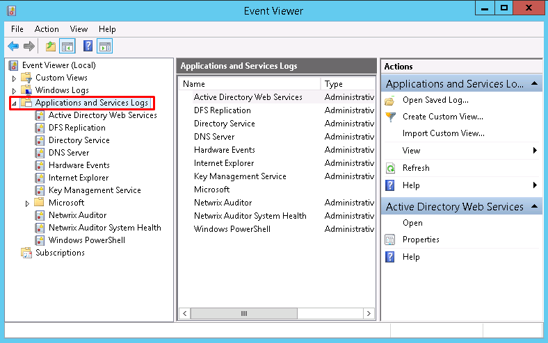
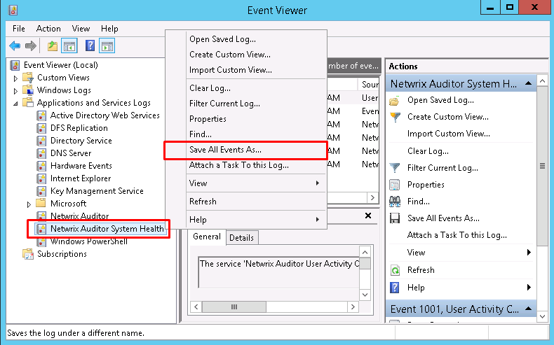

Question
How to save (export) and zip the Netwrix Auditor System Health event log?
Answer
Export System Health event log via elevated Command Prompt line
Execute the following command in the elevated Command Prompt line:
wevtutil epl "Netwrix Auditor" %userprofile%\desktop\NASH.evtxThe exported System Health event log will appear in your Desktop.
Export System Health event log manually
-
Open Event Viewer.
-
Expand the Applications and Services Logs folder.
 -
Right-click the Netwrix Auditor System Health log file and select Save All Events As....
-
Name the file and click Save.
 -
Select the option to Display information for these languages, check the English (United States) checkbox, and click OK.
-
Once file is saved, right-click it and zip the file.
Sending Netwrix Auditor logs
Your Technical Support Engineer may request you to attach Netwrix Auditor logs. Refer to the following article for additional information: How to Send Netwrix Auditor Logs.